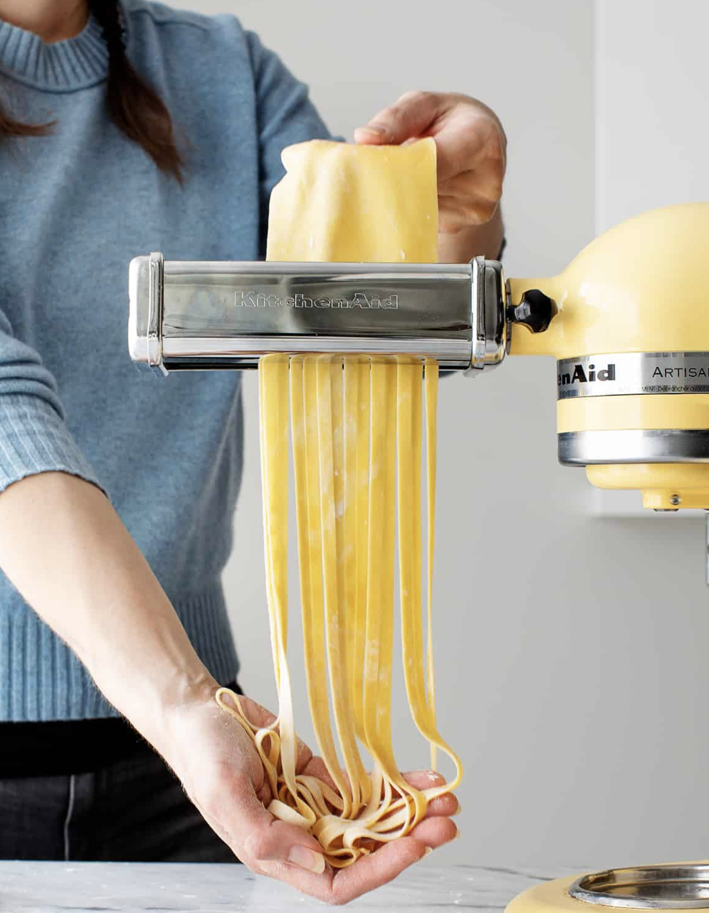

Universal Pasta

Dreamy pasta dough
This homemade pasta recipe is our new favorite cooking project!
We keep coming back to homemade pasta. It's super fun to make together,
and it only requires a handful of basic ingredients.
Of course, the fact that it's absolutely delicious doesn't hurt either. 🙂
Ingredients
- All-purpose flour
- Eggs
- Olive oil
- Salt
Steps
- Place the flour on a clean work surface and make a nest
- Knead the dough for 8 to 10 minutes
- Run the dough through the pasta roller three times
- Repeat with remaining dough